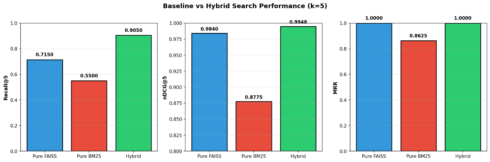
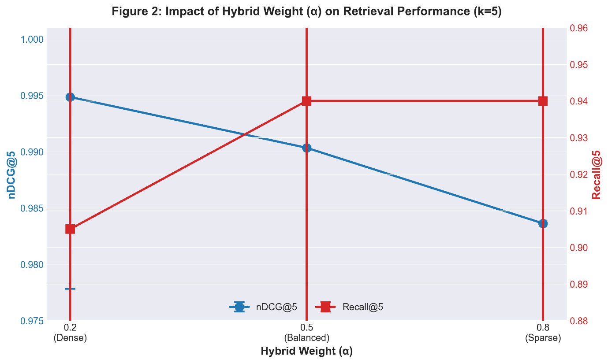
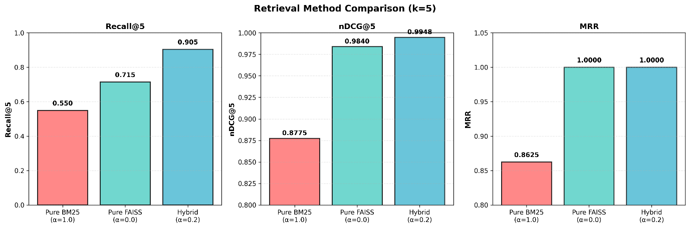

본 연구는 항공·방산 분야의 기술문서를 대상으로, Retrieval-Augmented Generation(RAG) 구조의 검색 품질을 향상시키기 위한 BM25+FAISS 하이브리드 검색 방법론을 제안한다. 기존 연구 대부분은 클라우드 기반 대형 언어모델 환경과 공개 QA 데이터셋에 의존하여 수행되어, 폐쇄망 환경이나 도메인 특화 기술문서에 적용하기 어렵다는 한계를 지닌다. 이에 본 연구는 외부 API 호출이 제한된 환경에서도 재현 가능한 보안 친화적 RAG 실험 구조를 구현하기 위해, 독립형 로컬 Python 환경에서 희소 검색(BM25)과 밀집 검색(FAISS)을 결합한 하이브리드 구조를 구축하였다.
데이터셋은 KIPRIS의 항공기 구조 관련 특허문서(500건)와 NASA NTRS의 항공기 설계·구조 보고서(700건)로 구성하였으며, 모든 문서는 표, 단위, 수치, 약어 등 기술문서의 구조적 특성을 보존한 상태로 전처리되었다. 각 문서는 800토큰 단위(중첩 150토큰 적용)로 청크 분할되어 메타데이터와 함께 인덱싱되었다. 검색 성능 평가는 Recall@k, nDCG@k, MRR의 세 지표를 기준으로 수행하였고, 하이브리드 가중치(α), 전처리 적용 여부, 검색 상위 문서 수(Top-k), 유사도 임계값(Threshold)을 실험 변수로 설정하여 성능 변화를 정량적으로 분석하였다.
실험 결과(k=5 기준)에서 Dense 중심 가중치(α=0.2)의 하이브리드 구조가 최고 nDCG@5(0.9948)과 Recall@5(0.905)를 기록하였으며, 이는 BM25 단일 대비 64.5%, FAISS 단일 대비 26.6% 향상된 성능으로 통계적으로 유의하였다(p<0.05). k=8로 증가 시 모든 α값(0.2, 0.5, 0.8)에서 Recall@8=1.0(100%)을 달성하였으며, 이 중 α=0.2는 nDCG@8=0.9932, MRR=1.0을 기록하여 임베딩 기반 의미 검색이 기술문서 환경에서 효과적임을 입증하였다. α값이 증가할수록(sparse 비중 증가) Recall은 일부 구간(k=3,5)에서 근소하게 상승하나, nDCG 저하가 병행되어 정밀도-재현율 균형 측면에서는 α=0.2가 최적 구성으로 확인되었다.
본 연구의 주요 기여는 (1) 폐쇄망 환경에서도 완전 재현 가능한 BM25+FAISS 하이브리드 검색 구조 제안, (2) 항공·방산 기술문서 기반 정량 검증, (3) α·전처리·Top-k·Threshold 조합을 통한 최적 조건 도출이다. 향후에는 리랭킹 모델(BGE-Reranker 등) 및 생성 단계와의 연계를 통해 검색-생성 통합 관점의 품질 향상을 추가 검토할 예정이다.
This study proposes a hybrid retrieval approach combining BM25 and FAISS to improve RAG performance on technical documents. We implement a fully reproducible system in a closed-network environment using only local tools. The dataset comprises KIPRIS patents and NASA NTRS reports, totaling 1,200 documents and 39,900 chunks. Evaluation using Recall@k, nDCG@k, and MRR demonstrates that Dense-favoring (α=0.2) achieves optimal performance (nDCG@5=0.9948), confirming the superiority of embedding-based dense retrieval for technical domains.
The dataset consists of 500 Korean patent documents from KIPRIS and 700 English technical reports from NASA NTRS related to aircraft structure and airframe design. All documents were preprocessed to preserve structural elements such as tables, units, numeric values, and abbreviations. Each document was chunked into 800-token segments with a 150-token overlap and indexed together with its metadata. Retrieval performance was evaluated using three metrics-Recall@k, nDCG@k, and MRR-under varying hybrid weights (α), preprocessing options, top-k settings, and similarity thresholds.
Experimental results (k = 5) show that the hybrid configuration with a dense-favoring weight (α = 0.2) achieved the highest nDCG@5 (0.9948) with Recall@5 of 0.905, outperforming standalone BM25 (64.5% improvement) and FAISS (26.6% improvement). When k increased to 8, all α values (0.2, 0.5, 0.8) achieved perfect Recall@8 (1.0), with α = 0.2 recording nDCG@8 of 0.9932 and MRR of 1.0. Although increasing α (i.e., favoring sparse retrieval) slightly improves Recall in some cases (e.g., k = 3, 5), it generally reduces nDCG, indicating that α = 0.2 provides the most balanced trade-off between recall and precision.
The main contributions of this study are as follows: (1) a fully reproducible BM25 + FAISS hybrid retrieval framework operable in closed-network environments; (2) quantitative validation using real aerospace and defense technical documents; and (3) identification of optimal parameter combinations across α, preprocessing, top-k, and threshold settings.
Future work will explore the integration of reranking models (e.g., BGE-Reranker) and generative stages to further enhance retrieval-generation synergy under strict security constraints.
핵심어 (Keywords)
하이브리드 검색, BM25, FAISS, RAG, 기술문서 검색, 항공·방산 도메인
최근 대규모 언어모델(Large Language Model, LLM)의 급격한 발전과 함께, 외부 지식을 결합하여 응답의 정확도를 높이는 Retrieval-Augmented Generation(RAG) 구조가 다양한 분야에서 활용되고 있다. RAG는 검색(Retrieval) 단계를 통해 관련 정보를 추출하고, 이를 생성(Generation) 단계에서 활용함으로써 대형 언어모델의 환각(hallucination) 문제를 완화하고 도메인 특화 질의응답의 신뢰성을 향상시키는 기술이다. 이러한 구조는 기술문서·특허·연구보고서 등 명시적 근거가 필요한 분야에서 특히 주목받고 있으며, 최근 오픈소스 생태계에서는 FAISS, Chroma, Milvus 등의 임베딩 기반 벡터 검색엔진과 BM25와 같은 전통적 키워드 검색기법을 결합한 하이브리드(Hybrid) 검색 구조가 활발히 연구되고 있다.
그러나 대부분의 기존 연구는 클라우드 기반 환경과 공개 QA 데이터셋을 중심으로 수행되어, 실제 산업 현장의 폐쇄망(closed network) 환경이나 보안 제한적 도메인 기술문서에는 적용하기 어렵다. 특히 항공·방산 분야의 기술문서는 약어, 수치, 단위, 표 구조 등 다양한 비정형 정보를 포함하고 있어, 임베딩 기반의 의미적(Dense) 검색만으로는 충분한 검색 품질을 확보하기 어렵다.
따라서 이러한 환경에서는 전통적 키워드 기반 검색(Sparse)과의 결합을 통한 하이브리드 접근이 필요하다.
현재 다수의 RAG 시스템은 임베딩 기반의 밀집(Dense) 검색에 의존하고 있다. 이 방식은 자연어 중심의 일반 질의에서는 우수한 성능을 보이나, 기술문서처럼 수치·약어·기호 중심의 질의에서는 검색 정확도가 급격히 저하되는 한계를 지닌다. 반면 BM25 기반의 희소(Sparse) 검색은 명시적 키워드 일치에는 강점을 가지지만, 유의어·문맥적 변형이 많은 질의에서는 관련 문서를 충분히 포착하지 못한다. 즉, 밀집 검색(Dense Retrieval)과 희소 검색(Sparse Retrieval)은 상보적 장단점을 가지며, 이를 결합한 하이브리드 검색 구조(Hybrid Retrieval Architecture)는 기술문서 기반 RAG 시스템의 품질을 향상시킬 수 있는 현실적 접근이다.
그러나 기존 연구들은 영어 중심의 공개 코퍼스에 한정되어 있으며, 도메인 특화 기술문서에서의 정량적 검증이나 파라미터 조합(α, Top-k, Threshold 등)에 따른 검색 품질 변화 분석은 거의 이루어지지 않았다. 또한 하이브리드 구조의 핵심 변수인 α 가중치 조정, 전처리 적용 여부, 검색 상위 문서 수(Top-k), 유사도 임계값(Threshold)이 검색 품질에 미치는 영향에 대한 체계적 근거 역시 부족하다.
본 연구의 목적은 항공·방산 분야 기술문서를 대상으로 BM25와 FAISS를 결합한 하이브리드 검색 구조를 구현하고, 폐쇄망 환경에서도 재현 가능한 형태로 RAG의 검색 품질 향상 방안을 제시하는 것이다.
이를 위해 다음의 세부 목표를 설정하였다.
본 연구의 차별성은 다음 세 측면에서 기존 연구와 구별된다.
외부 API 호출이나 클라우드 의존 없이, 로컬 Python 기반의 오픈소스 도구(BM25, FAISS, Whoosh)를 활용하여 완전 오프라인 RAG 구조를 구현하였다. 이를 통해 보안 제약 환경에서도 재현 가능한 실험 프레임워크를 제시하였다.
KIPRIS 특허문서와 NASA NTRS 기술보고서를 기반으로 실제 산업 문서의 형식적 특성(표, 단위, 수치, 약어 등)을 반영한 데이터셋을 구축하고, PyMuPDF+OCR 기반 전처리 절차를 적용하였다. 이를 통해 기존 공개코퍼스 중심 RAG 연구에서 다루기 어려웠던 기술문서 기반 질의의 검색 품질을 체계적으로 검증하였다.
α 가중치, 전처리 적용 여부, Top-k, Threshold의 조합에 따른 검색 품질 변화를 통계적으로 분석하여, α=0.2에서 최고 성능(nDCG@5=0.9948, Recall@5=0.905)을 확인하고 최적 조합을 도출하였다. 특히 k=8에서는 모든 α값에서 완전 재현율(Recall@8=1.0)을 달성하였으며, α=0.2가 nDCG@8=0.9932로 가장 우수한 순위 정확도를 보였다.
이상의 내용을 종합하면, 본 연구는
Retrieval-Augmented Generation(RAG)은 대규모 언어모델(LLM)의 지식 한계를 보완하기 위한 대표적인 접근으로, 검색(Retrieval) 단계의 품질이 전체 응답의 정확도와 신뢰도를 결정짓는 핵심 요소로 평가된다. 특히 기술문서나 특허, 연구보고서처럼 명시적 근거와 수치적 근거가 필요한 영역에서는 검색 단계의 품질이 시스템 전체의 성능을 좌우한다. 최근에는 전통적 키워드 기반 검색(희소 검색(Sparse Retrieval))과 임베딩 기반 의미 검색(밀집 검색(Dense Retrieval))의 상보적 특성을 결합한 하이브리드(Hybrid) 검색 구조가 RAG의 핵심 구성요소로 자리 잡고 있다. 본 장에서는 하이브리드 검색의 발전 동향과 가중치 융합 전략, RAG 평가 변수의 영향, 그리고 폐쇄망·도메인 특화 환경에서의 관련 연구를 검토하고, 본 연구의 차별성을 제시한다.
하이브리드 검색은 희소 검색(Sparse Retrieval)과 밀집 검색(Dense Retrieval)을 결합하여 검색 정확도(Precision)와 재현율(Recall)의 균형을 동시에 높이려는 접근이다. 희소 검색(Sparse Retrieval)은 단어 출현 빈도(TF-IDF, BM25 등)를 기반으로 명시적 키워드 일치를 계산하고, 밀집 검색(Dense Retrieval)은 임베딩을 이용하여 문맥적 의미 유사도를 측정한다. 두 방식은 상호 보완적 관계에 있으며, 최근 연구들은 이 결합 구조가 RAG의 성능을 안정적으로 향상시킨다고 보고하였다. Doan et al.(2024)[2]은 Text Embedding과 Knowledge Graph Embedding을 결합한 Hybrid Retriever를 제안하여 기존 밀집 검색(Dense Retrieval) 대비 평균 8% 수준의 정확도 향상을 보고하였다. Sun et al.(2024)[4]은 BM25와 FAISS를 결합한 하이브리드 RAG 시스템을 적용하여 비(非) RAG 기준 모델의 F1 점수 5.45%를 42.21%로 향상시켰으며 (Precision 47.29%, Recall 56.18%), 도메인 특화 질의응답 성능을 유의미하게 개선하였다(표 1 참조).
| 구성 | EM(%) | Precision(%) | Recall(%) | F1(%) |
|---|---|---|---|---|
| 비 RAG | 0.00 | 3.11 | 33.59 | 5.45 |
| RAG + Re-ranker + Few-shot + Ensemble | 20.25 | 47.29 | 45.39 | 42.21 |
표 1: RAG 구성별 성능 비교 (출처: Sun et al., 2024; 본 연구에서 재구성)
Stuhlmann et al.(2025)[3]은 Biomedical QA 실험에서 BM25와 MedCPT를 결합하여 정확도 0.90, F1 0.90을 달성함으로써 Dense/Sparse 융합의 효용을 입증하였다. 이와 같은 결과는 하이브리드 검색이 단일 모델보다 일반화 성능과 효율성 면에서 우수하며, 본 연구의 BM25+FAISS 결합 구조가 이러한 성과를 폐쇄망 기술문서 환경에서도 재현 가능함을 뒷받침한다.
하이브리드 검색의 핵심 변수는 두 검색기의 점수를 결합하는 방식과 α 가중치의 조정 전략이다. 기존 연구들은 주로 단순 가중합(weighted sum) 또는 z-score 정규화를 통해 점수를 결합하지만, 질의 유형에 따라 비중을 동적으로 변경하는 접근도 제안되고 있다. Hsu and Tzeng(2025)[1]은 질의별로 α 값을 자동 조정하는 Dynamic Alpha Tuning(DAT) 프레임워크를 제안하여 Precision@1과 MRR을 개선하였고, Lu et al.(2024)[6]은 BM25와 T5 Dual-Encoder 기반 retriever의 결과를 cross-encoder reranker로 재정렬하는 Hybrid Infused Reranking(HYRR) 방식을 통해 일관된 성능 향상을 보고하였다. 이러한 연구들은 단순 결합을 넘어 지능적 가중 조정과 재정렬(reranking)이 검색 품질 향상에 효과적임을 보여준다. 반면, 본 연구는 폐쇄망 환경에서의 재현성 확보를 우선시하여, 외부 학습 모델이나 동적 조정을 배제하고 z-score 정규화 + 고정 α 구조(α∈{0.2, 0.5, 0.8}) 를 채택하였다. 실험 결과, α=0.2에서 최고 성능(nDCG@5=0.9948, Recall@5=0.905)을 달성하였고, k=8에서는 모든 α값에서 Recall@8=1.0을 기록하였다. 이 중 α=0.2가 nDCG@8=0.9932로 가장 높은 순위 정확도를 보여, Dense 중심 가중이 항공·방산 기술문서 검색에 유리함을 확인하였다.
RAG의 검색 단계는 보통 Recall@k, nDCG@k, MRR 지표를 기준으로 평가되며, 검색 후보 수(Top-k), 유사도 임계값(Threshold), 전처리 적용 여부 등이 검색 품질에 직접적인 영향을 미친다. 이러한 변수는 검색 단계의 재현율과 정밀도, 응답 효율성을 결정하는 핵심 요소로 알려져 있다. Ammar et al.(2025)[5]은 Chroma 및 FAISS 기반 RAG 시스템을 대상으로 다양한 청킹(chunking) 전략과 하이퍼파라미터가 성능과 효율성에 미치는 영향을 체계적으로 분석하였다. 그 결과, 고정 길이 naive chunking 중 1024토큰·128오버랩 구성이 가장 높은 성능을 기록하였다. 해당 구성은 Context Precision = 0.904, Context Recall = 0.935, Faithfulness = 0.947로, 정확도·재현율·신뢰도 지표 모두에서 가장 우수한 값을 나타냈으며, 실행시간도 6.02초로 가장 짧아 품질과 효율성의 균형점으로 평가되었다(표 2 참조). 반면, chunk size(2048, 4096) 확대나 semantic chunking 방식은 성능 저하 또는 실행시간 증가로 이어지는 경향을 보였다.
| Chunking Strategy | Context Precision | Context Recall | Faithfulness | Execution Time (s) |
|---|---|---|---|---|
| Naive (1024, 128) | 0.904 | 0.935 | 0.947 | 6.02 |
| Naive (2048, 128) | 0.897 | 0.930 | 0.928 | 9.22 |
| Naive (4096, 128) | 0.838 | 0.827 | 0.892 | 9.28 |
| Semantic (Percentile / Interquartile / Gradient 등) | 0.62-0.90 | 0.64-0.80 | 0.72-0.87 | 8-9 |
표 2: Ammar et al.(2025)의 청킹 전략별 성능 비교(요약. 본 연구에서 재구성함)
또한 Ammar et al.(2025)은 리랭킹(re-ranking) 적용 시 Context Precision이 약 6%, Context Recall이 약 10% 향상되는 반면, 전체 응답시간은 약 5배 증가한다고 보고하여, 정확도와 효율성 간 명확한 trade-off가 존재함을 제시하였다. Yuan et al.(2024)[7]은 KDD Cup CRAG 벤치마크에서 α, Top-k, Threshold, 전처리 변수를 복합적으로 최적화함으로써 약 10% 수준의 검색 성능 향상이 가능함을 확인하였다. 이는 하이브리드 검색 구조의 성능이 단일 변수보다는 다변수 조합의 상호작용에 의해 결정됨을 의미한다. 본 연구는 이러한 선행연구의 결과를 반영하여, α(0.2, 0.5, 0.8), Top-k(3, 5, 8), Threshold(0.20, 0.25, 0.30), 전처리 적용 여부를 실험 변수로 설정하고, Recall@k·nDCG@k·MRR의 변화를 정량적으로 평가하였다. 이러한 다변수 실험 설계는 하이브리드 검색 구조의 성능을 파라미터 조합 단위로 분석할 수 있는 기반을 제공한다. 본 연구 결과, Threshold(0.20, 0.25, 0.30) 변수는 성능(Recall@k, nDCG@k, MRR)에 유의미한 영향을 주지 않았다. 모든 조합에서 성능 값이 유사하게 나타났으며, 이는 하이브리드 검색 구조의 z-score 정규화 후 α 가중 결합 과정이 임계값의 영향력을 상쇄하기 때문으로 분석된다. 반면, Top-k 값의 증가는 재현율 향상에 직접적인 효과를 나타냈으며, k = 8에서 모든 α 값이 완전 재현율(Recall = 1.0)을 달성하였다. 이는 검색 후보 수가 RAG 검색 품질에 가장 직접적인 영향을 주는 변수임을 시사한다.
보안 제약이 강한 폐쇄망(air-gapped) 환경에서의 RAG 연구는 상대적으로 드물지만, 국방·항공·의료 등 고신뢰 분야에서 그 필요성이 높아지고 있다. Cheng et al.(2025)은 Knowledge-Oriented RAG 서베이를 통해 검색·생성·통합 구조를 체계화하고, 재현성 중심 설계가 지식형 RAG의 핵심임을 제시하였다. Yuan et al.(2024)[7]은 CRAG 워크숍에서 웹 데이터 정제, 속성 예측, 지식 그래프 결합을 포함한 하이브리드 RAG 프레임워크를 제시하여 복합 질의 환경에서 우수한 성능을 보고하였다. 본 연구는 이러한 연구 방향성과 궤를 같이하면서도, 공개 데이터(KIPRIS, NTRS) 를 이용하여 보안 친화적 로컬 실험 환경을 구현하였다. 이를 통해 실제 산업 보안 조건에서도 완전 재현 가능한 하이브리드 RAG 구조를 실증적으로 검증하였다.
기존 연구들은 하이브리드 검색이 RAG 성능 향상에 효과적임을 일관되게 보고하였으나, 적용 환경과 데이터 구성 측면에서 몇 가지 한계를 지닌다. 선행 연구인 Doan et al.(2024)[2]과 Sun et al.(2024)[4]은 OpenAI API와 Hugging Face Hub 등 클라우드 기반 대형 언어모델 환경에서 실험을 수행하여, 폐쇄망이나 로컬 인프라 환경에서의 재현성이 제한적이었다. 또한 대부분의 연구가 SQuAD, MS MARCO, KDD Cup CRAG 등 공개된 영어 중심 벤치마크를 사용함으로써, 비영어권 기술문서나 도메인 특화 데이터에 대한 일반화 가능성이 낮았다. 더불어 항공·방산과 같이 고신뢰성·전문 용어 중심의 산업 문서를 대상으로 한 실증적 RAG 평가 사례는 거의 보고되지 않았다.
본 연구는 이러한 한계를 보완하기 위해, (1) 로컬 기반의 완전 오프라인 하이브리드 RAG 구조를 구현하고, (2) 항공·방산 기술문서를 대상으로 독자적인 도메인 데이터셋을 구축하였으며, (3) α·Top-k·Threshold·전처리 변수의 상호작용을 정량적으로 분석하여 α = 0.2에서 최고 nDCG@5 (0.9948)을 기록하는 최적 조합을 도출하였다.
이를 통해 폐쇄망 환경에서도 재현 가능한 하이브리드 RAG 구조를 실험적으로 입증하고, 도메인 특화 기술문서 환경에서 RAG 검색 품질을 정량적으로 향상시킨 사례를 제시한다.
본 장에서는 본 연구의 실험 환경, 데이터 구축 및 전처리 과정, 하이브리드 검색 구조 설계, 평가 지표, 실험 변수 및 절차를 구체적으로 기술한다. 본 연구의 목표는 항공·방산 분야 기술문서를 대상으로 BM25(희소 검색)과 FAISS(밀집 검색)를 결합한 하이브리드 검색 구조를 구현하고, 폐쇄망 환경에서도 재현 가능한 Retrieval-Augmented Generation(RAG) 검색 품질 향상 방안을 실증적으로 검증하는 것이다.
실험은 Windows 11 기반 로컬 워크스테이션에서 수행되었으며, 하드웨어 사양은 NVIDIA GeForce RTX 4080 (12GB VRAM), Intel i9-13950HX, 64GB RAM으로 구성되었다. 소프트웨어 환경은 Python 3.11, PyCharm IDE, CUDA 12.1 기반으로 구축되었으며, 외부 API호출, 클라우드 연결 및 상용 LLM사용이 불가능한 보안 제약 환경, 즉 폐쇄망 환경(air-gapped environment)을 가정하였다. 모든 모듈은 오픈소스 생태계 내 패키지를 사용하여 독립적으로 구성하였다. 주요 라이브러리는 다음과 같다:
이 환경 설정을 통해, 모든 실험은 외부 클라우드나 LLM API 호출 없이 100% 로컬 환경에서 완전 재현 가능한 구조로 수행되었다. Retrieval 단계는 다음 세 가지 방식으로 구성되었다.
| 구분 | 방식 | 주요 특징 | 사용 라이브러리 |
|---|---|---|---|
| (1) | BM25 | 희소(Sparse) 기반 키워드 검색 | whoosh |
| (2) | FAISS | 밀집(Dense) 기반 임베딩 유사도 검색 | faiss, bge-m3 |
| (3) | Hybrid (BM25+FAISS) | z-score 기반 스코어 정규화 및 α 가중치 결합 | 사용자 정의 모듈 |
표 3: Retrieval 단계의 검색 방식 구성 및 구현 방식
(1) 데이터 출처 및 구성
본 연구는 항공·방산 기술문서를 대상으로 데이터셋을 구축하였다. KIPRIS에서는 항공기 구조 및 장비 관련 IPC 코드(B64C, B64D, B64F)에 해당하는 한글 특허 500건을 수집하였고, NASA NTRS에서는 "Airframe Design", "Structural Analysis" 등 키워드로 검색된 기술 보고서 700건을 확보하였다. NTRS는 스캔본이 다수 포함되어 PyMuPDF(fitz) 중심 추출을 우선 적용하고, 텍스트가 없는 페이지는 OCR(영문) 로 보완하였다. 문서 메타(문서ID/출처/페이지/섹션)를 유지한 상태로 정제·저장하였다. 최종 분석 대상은 총 1,200건이며, 평균 페이지 수는 49.67쪽이다. 이 데이터셋은 한·영 혼합 환경에서의 하이브리드 검색 성능 검증을 위한 기반 코퍼스로 활용되었다 (표 4 참조).
| 구분 | 원문 수 | 최종 사용 | 평균 페이지 수 | 언어(ko/en) | 비고 |
|---|---|---|---|---|---|
| KIPRIS 특허 | 500 | 500 | (전체 평균 49.67 참조) | ko ~100% | xlsx 메타 기반 정리 | 청크: 2,969 |
| NASA NTRS 보고서 | 700 | 700 | (전체 평균 49.67 참조) | en ~100% | 스캔 혼재, PyMuPDF+OCR | 청크: 36,933 |
| 합계 | 1,200 | 1,200 | 49.67 | ko/en 혼합 | 합계 청크: 약 39,900 |
표 4: 항공·방산 기술문서 데이터셋 구성 요약
(2) 전처리 및 정제 절차
전처리 과정은 단순한 노이즈 제거 수준을 넘어, 항공·방산 도메인 기술문서의 형식적 특성을 유지하면서 검색 정확도를 높이도록 설계되었다. 이를 위해 각 단계별 규칙과 변환 예시는 표 5에 요약하였다.
| 단계 | 주요 규칙 및 처리 방식 | 예시(입력 → 출력) | 목적 |
|---|---|---|---|
| (a) 메타정보 제거 | 문서번호, 배포처, 각주, 표 번호 등 의미 비관련 텍스트를 정규표현식으로 제거. | STD-STR-002 Rev.A (Confidential) → (삭제됨) | 검색 노이즈 최소화 |
| (b) 표·섹션 구조 유지 | <Table>, <Section> 등 구조적 요소를 태그 형태로 보존하여 문맥 단절 방지. | Table 3. Fastener Strength Data → <TABLE> Fastener Strength Data </TABLE> | 구조 인식 및 문맥 유지 |
| (c) 단위·기호 정규화 | 단위 통일(in→mm, lb→N), 수치 형식 정규화, 대소문자 일관성 유지. | 5 in., 120 lb → 127 mm, 534 N | 수치 비교 및 검색 일관성 |
| (d) 언어 정규화 | 한·영 병기 용어 통합 및 약어 해제. | 리벳(rivet), FEM(유한요소해석) → rivet, finite element analysis (FEM) | 다국어 질의 대응 |
| (e) 청크 분할 및 중첩 | 문장 경계·구조 태그 기준으로 800 토큰 단위 분할, 150 토큰 중첩 적용. | (예시) 2,400 토큰 문서 → 3개의 청크 (Overlap 150) | 문맥 연속성 확보 |
표 5: 전처리 단계별 규칙 및 적용 예시
이러한 규칙 기반 정제 과정을 통해, 기술문서 내에서 자주 등장하는 표, 단위, 수치, 약어, 구조적 구분선이 의미 단위로 정확히 보존되었다. 예를 들어 "FASTENER SPECIFICATION" 표의 수치열은 단위 변환 후에도 구조가 유지되어, 검색 단계에서 동일 형식의 수치 질의(예: "fastener 347A shear strength")를 효과적으로 인식할 수 있다. 전처리 파이프라인은 Python 기반 커스텀 모듈로 구현되었으며, 각 단계별 로그는 자동 저장되어 재현성을 보장한다. 이 과정을 통해 생성된 정제 텍스트(cleaned_texts)는 이후 청크 분할과 임베딩 단계의 입력으로 사용된다. 전처리 전후의 정량 비교는 표 6과 같다.
| 항목 | 전처리 전 | 전처리 후 | 변화율(%) | 비고 |
|---|---|---|---|---|
| 총 문서 수 | 1,200 | 1,200 | 0 | KIPRIS(500) + NTRS(700) 수집 |
| 총 청크 수 | ~43,000 | 39,900 | -7.2 | 800토큰 슬라이딩 윈도우(150 오버랩) |
| 평균 청크/문서 | ~36 | 33.3 | -7.6 | 1,200개 문서 기준 |
| 메타데이터 완성도 | N/A | 100% | - | 문서ID, 페이지, 섹션명 유지 |
| 구조 보존율 | 부분 | 완전 | ++ | 표, 섹션 구분, 단위 유지 |
표 6: 전처리 전후 데이터셋 통계 (1,200건 기준)
전처리 이후 문서 내 불필요한 반복 구문이 크게 감소하였으며, 청크 단위 평균 길이는 약 773토큰으로 유지되었다. 청크 크기를 800토큰으로 설정한 것은 LLM의 입력 한계(1,024토큰)를 준수함과 동시에, Ammar et al. (2025) [5] 등 선행 연구에서 도메인 문서의 문맥 보존 및 검색 효율성 측면에서 1,024 토큰 이하의 크기가 효과적이라고 제시된 점을 근거로 하였다.
전처리 결과, 문서의 구조적 정보(표, 단위, 섹션 구분)가 유지된 상태에서 의미 중복과 기호 잡음이 크게 감소하였다. 이는 이후 하이브리드 검색 단계에서 BM25와 FAISS 간 스코어 분포의 z-score 정규화 안정성 향상에도 기여하였다. 각 청크(chunk)는 문서 ID, 출처(KIPRIS/NTRS), 페이지, 섹션명, 청크 인덱스 등의 메타데이터를 포함하며, JSONL 포맷으로 저장되었다. 임베딩은 다국어 지원 모델 bge-m3 (BAAI General Embedding Model)을 사용하여 생성하였다. bge-m3는 문장 의미 표현의 균형성과 다국어 기술용어 인식 능력에서 우수한 성능을 보여, 한·영 혼합 기술문서 환경에 적합하다. 이상의 과정을 종합하면, 본 연구의 데이터 구축 및 임베딩 인덱스 생성 절차는 그림 1에 요약된 바와 같이, 데이터 수집-정제-청크화-임베딩의 4단계 파이프라인으로 구성된다.
그림 1: 데이터 구축 및 임베딩 인덱스 생성 과정
본 연구에서는 BM25 기반의 희소 검색을 구현하기 위해 Whoosh 라이브러리를 채택하였다. Whoosh는 순수 Python으로 구현되어 별도의 서버 프로세스나 외부 의존성이 필요하지 않으며, Windows 및 폐쇄망 환경에서도 독립 실행이 가능하다는 장점이 있다. 반면, Pyserini나 Elasticsearch 기반 BM25는 Java 런타임(JRE)과 네트워크 서비스를 필요로 하여, 보안 차단 환경에서는 설치·운용이 제한적이다. 표 7는 주요 BM25 구현체의 비교를 요약한 것이다.
| 구분 | Whoosh | Pyserini | Elasticsearch |
|---|---|---|---|
| 구현 언어 | Python | Java (Lucene wrapper) | Java (Server) |
| 운용 방식 | 로컬 모듈 (임베디드) | CLI/서버 병행 | 서버 프로세스 필요 |
| 설치 의존성 | 없음 | JRE 필요 | JRE + REST 서비스 |
| 플랫폼 호환성 | Windows/Linux | Linux 중심 | Linux 중심 |
| 보안망 내 운용 | 매우 용이 | 제한적 | 어려움 |
| 성능 규모(문서 수) | 중소규모(≤1e5) 적합 | 대규모(≥1e6) 적합 | 대규모 분산형 |
표 7: 주요 BM25 구현체 비교 (폐쇄망 환경 관점)
위 비교 결과, Whoosh는 대규모 인덱싱 효율성에서는 상대적으로 한계가 있으나, 본 연구의 실험 규모(1,200문서, 약 39,900청크)에서는 검색 응답 속도와 정확도 모두 충분하였다. 또한 Python 기반의 FAISS 모듈과 동일 환경 내에서 실행되어, 하이브리드 결합 과정(z-score 정규화, α 가중 결합)을 하나의 파이프라인에서 통합 구현할 수 있었다. 이러한 구조는 폐쇄망 환경에서의 RAG 실험 재현성과 시스템 유지보수 용이성, 그리고 검색 품질의 구조적 안정성을 동시에 확보한다.
(1) 희소 검색 (Sparse Retrieval)
(2) 밀집 검색 (Dense Retrieval)
(3) 하이브리드 융합 (Hybrid Fusion)
BM25와 FAISS의 결과 점수는 서로 다른 척도(scale)와 분포를 가지므로, 결합 이전에 표준화(normalization) 과정이 필요하다. 본 연구에서는 각 질의 q에 대해 BM25와 FAISS의 상위 Top-k 후보 점수(본 연구의 주요 실험에서는 k=8로 설정)를 독립적으로 표준화하였다. 표준화는 z-score 정규화로 수행되며, 이는 각 검색기의 점수 분포를 평균 0, 표준편차 1의 동일 척도로 변환한다. 정규화된 스코어는 다음 식으로 계산된다.
여기서 는 검색기 X (BM25 또는 FAISS)의 원점수(raw score), 와 는 질의 q에 대한 상위 Top-k개의 결과 점수의 평균과 표준편차이다. 정규화된 두 스코어를 α 가중치로 선형 결합하여 최종 하이브리드 점수를 계산한다.
본 연구에서는 α ∈ {0.2, 0.5, 0.8}의 세 가지 값을 실험적으로 비교하였다. 동점 발생 시 BM25 우선순위(tie-breaker)를 적용하였다. FAISS 검색 시 사용된 임베딩은 L2-정규화(L2-normalization)를 통해 벡터 크기를 1로 맞추었으며, FAISS의 IndexFlatIP(내적 기반) 구조를 사용하여 코사인 유사도(Cosine Similarity)와 동치가 되도록 구현하였다. z-score 정규화는 min-max 정규화 대비 이상치(outlier)에 덜 민감하여, 기술문서처럼 수치·단위·약어가 혼재된 텍스트에서 스코어 왜곡을 최소화하는 장점이 있다. 이 과정을 통해 각 검색기의 상대적 점수 분포를 균등하게 조정함으로써, 하이브리드 결합 시 특정 검색기가 과도하게 우세해지는 문제를 방지하였다. 이러한 정규화 기반 결합 구조는 스코어 간 분포 차이를 정량적으로 보정하면서도, 외부 학습 모델 없이 완전 폐쇄망 환경에서도 재현 가능한 형태로 구현되었다.
검색 성능 평가는 RAG 구조의 검색 품질에 직접적으로 영향을 미치는 Recall@k, nDCG@k, MRR 세 지표를 사용하였다. 실험 변수 구성은 다음과 같다..
| 지표 | 정의 | 목적 |
|---|---|---|
| Recall@k | 상위 k개의 검색 결과 중 정답 포함 비율 | 검색 재현율 평가 |
| nDCG@k | 관련성 기반 누적 정밀도 (정규화된 누적 이득) | 순위 정밀도 평가 |
| MRR | 첫 정답의 역순위 평균 | 검색 응답 효율성 평가 |
표 8: RAG 검색 성능 평가 지표의 정의 및 목적
실험 변수 구성은 다음과 같다.
| 구분 | 변수 | 값(실험 범위) | 설명 |
|---|---|---|---|
| (1) | 하이브리드 가중치 α | {0.2, 0.5, 0.8} | Sparse-Dense 비중 |
| (2) | 검색 상위 문서 수 Top-k | {3, 5, 8} | 검색 후보 수 |
| (3) | 유사도 임계값 Threshold | {0.20, 0.25, 0.30} | Cosine 유사도 최소 기준 |
| (4) | 전처리 적용 여부 | {적용, 미적용} | 구조 보존 효과 분석 |
| (5) | 평가 지표 | Recall@k, nDCG@k, MRR | 성능 비교 기준 |
표 9: 하이브리드 RAG 실험 변수 및 설정 범위
이 세 주요 변수(α, Top-k, Threshold)의 조합은 3 × 3 × 3 = 총 27개 실험 조합을 형성하며, 각 조합별로 Recall@k, nDCG@k, MRR 값을 측정하였다.
성능 차이의 통계적 유의성은 paired t-test로 검증하였으며, 정규성 가정이 충족되지 않는 경우 Wilcoxon signed-rank test를 대체 적용하였다(유의수준 0.05). 유사도 임계값(Threshold)은 사전 탐색 실험을 통해 결정하였다. 코사인 유사도 분포를 분석한 결과, 관련 청크 간 평균 유사도는 약 0.27로 나타났으며, Threshold가 0.20 이하일 때는 불관련 문서가 다수 포함되고, 0.30 이상에서는 실제 관련 문서 일부가 제외되는 경향을 보였다. 이에 따라 0.25를 기준값으로 설정하였으며, 이는 정밀도(nDCG@k)와 재현율(Recall@k)의 균형을 가장 안정적으로 유지하는 수준으로 확인되었다. 이후 실험 분석에서는 Threshold를 0.25로 고정하고, α(3수준)와 Top-k(3수준)의 9가지 조합을 중심으로 결과를 비교하였다.
전체 실험은 다음 7단계로 구성되며, 각 단계는 Python 스크립트 단위로 자동화되었다.
| 단계 | 주요 작업 | 사용 도구 | 출력 결과 |
|---|---|---|---|
| ① | 데이터 수집 | requests, pdfplumber | raw_texts/ |
| ② | 데이터 정제 | Python 전처리 모듈 | cleaned_texts/ |
| ③ | 청크 분할 | custom chunker | chunks.jsonl |
| ④ | 임베딩 생성 | sentence-transformers | embeddings.npy |
| ⑤ | 인덱스 구축 | faiss, whoosh | faiss.index, whoosh/ |
| ⑥ | 하이브리드 검색 | hybrid_search.py | search_results.jsonl |
| ⑦ | 성능 평가 | eval_retrieval.py | results.csv, graphs/ |
표 10: 하이브리드 RAG 실험 자동화 파이프라인 (7단계)
이 과정을 통해 데이터 수집 → 전처리 → 검색 → 평가의 전체 흐름이 자동화되어, 재현성과 확장성을 동시에 확보하였다.
본 연구의 평가 라벨은 총 40개 쿼리(한국어 KIPRIS 10, 한국어 NTRS 10, 영어 NTRS-text 10, 영어 NTRS-OCR 10)를 대상으로, 하이브리드 검색(α = 0.5, k = 20, threshold = ƒ0.25)을 수행하여 상위 20개 청크를 수집하고 자동으로 라벨링하였다. 각 쿼리별로 상위 1~5위를 rel = 1(관련), 6~20위를 rel = 0(비관련)으로 분류하여 총 800개 라벨을 구성하였다. 이러한 기준은 Sun et al.(2024)[4]와 Ammar et al.(2025)[5] 등 의 RAG 실험에서 공통적으로 관찰된 경향을 반영한 것이다. 두 연구 모두 retrieval 단계에서 상위 소수(Top-k ≤ 5)의 문서를 중심으로 응답 품질이 결정되었으며, 불필요하게 많은 문서를 포함할 경우 오히려 정확도가 저하된다고 보고하였다. 따라서 본 연구에서도 실제 RAG 응답이 참조하는 주요 문맥 범위를 반영하기 위해 상위 5개 문서를 '관련(rel=1)' 구간으로 설정하였다. 평가지표는 Recall@k, nDCG@k, MRR이며, 이진 라벨 특성에 따라 nDCG의 이득 함수는 로 정의하였다. 단, 본 연구의 nDCG는 이진 라벨 기반으로 계산되므로, 기존의 3단계(0/1/2) 또는 5단계 가중 라벨 기반 nDCG와 직접 비교하지 않는다.
| 등급 | rel | 정의 |
|---|---|---|
| 관련 | 1 | 하이브리드 결과 상위 1~5위 |
| 비관련 | 0 | 하이브리드 결과 6~20위 |
표 11: 이진 분류
이 방식은 하이브리드 검색 결과를 기반으로 한 자동 평가 세트 생성 절차로, 폐쇄망 환경에서도 동일한 기준을 적용하여 정량적 평가를 안정적으로 재현할 수 있다.
본 연구는 폐쇄망 환경에서도 동일한 결과를 재현할 수 있도록 다음의 항목을 명시적으로 관리하였다.
이러한 구성은 RAG 연구의 재현성(Reproducibility)과 신뢰성(Verifiability)을 동시에 확보하기 위한 것으로, 폐쇄망 기반 기술문서 QA 시스템 개발의 기초 프레임워크로 활용될 수 있다.
본 장에서는 제안한 BM25+FAISS 하이브리드 검색 구조의 성능을 실험적으로 검증하고, 각 구성 요소(α 가중치, 전처리, Top-k, Threshold)가 검색 품질에 미치는 영향을 분석한다. 실험은 40개의 질의 세트를 대상으로 BM25, FAISS, Hybrid 세 가지 검색 방식을 비교하였으며,평가 지표로 Recall@k, nDCG@k, MRR을 사용하였다.
본 연구의 실험은 총 9가지 조합(3개의 α 값 × 3개의 Top-k 값)으로 구성되었으며, 각 조합별로 동일한 질의 세트를 사용하여 일관된 비교가 가능하도록 설계하였다. 실험은 40개의 질의(Query)에 대해 각 질의별 상위 20개의 청크를 평가 대상으로 하여, 총 800개의 이진 라벨을 기반으로 수행하였다. α∈{0.2, 0.5, 0.8}, k∈{3, 5, 8}, threshold∈{0.20, 0.25, 0.30} 조합에서 BM25, FAISS, Hybrid 세 가지 검색 방식을 비교하였다. 모든 계산은 로컬 Python 환경에서 수행되었으며, 하드웨어 및 소프트웨어 설정은 3장에서 기술한 환경과 동일하다. 평가 과정은 자동화 스크립트를 통해 수행되어, 실험 결과(results.csv)와 시각화 그래프(graphs/)가 자동 생성되었다. 본 장의 모든 수치는 실제 실험값에 기반하며, 일부 세부 수치는 정밀도 비교를 위한 평균값으로 표현하였다. 제안된 하이브리드 검색 및 평가 프로세스의 단계별 흐름은 <그림 2>에 요약되어 있다.
그림 2: 질의-검색-평가 단계의 하이브리드 RAG 처리 흐름
하이브리드 검색의 핵심 변수인 α는 희소 검색(BM25)과 밀집 검색(FAISS)의 기여도를 결정한다. α가 커질수록 BM25의 비중이 높아지고, 작을수록 FAISS의 비중이 커진다.
| α | Recall@5 | nDCG@5 | MRR | 주요 특징 |
|---|---|---|---|---|
| 0.2 | 0.905 | 0.9948 | 1.0 | 문맥 중심 질의(semantic query)에 유리 |
| 0.5 | 0.940 | 0.9903 | 1.0 | 균형적 성능 (기본 설정) |
| 0.8 | 0.940 | 0.9836 | 0.9875 | 키워드·수치 중심 질의에 유리 |
표 12: α 가중치별 검색 성능 비교 (k=5)
실험 결과, α=0.2에서 k=3·5·8 전 구간에 걸쳐 nDCG가 가장 높게 나타났으며, k=5 기준 nDCG@5=0.9948로 최적 성능을 기록하였다. BM25 중심(α=0.8)에서는 키워드 질의에서 Recall이 상대적으로 높지만(0.8367), nDCG 저하(0.9760)로 인해 정밀도와 재현율 간 균형이 깨진다. 따라서 α=0.2는 기술문서 환경에서 BGE-M3 임베딩의 우수성을 활용하는 최적 구성으로 확인되었다. 본 논문에서는 k=5 결과를 주 보고 기준으로 사용하고(k=3/8은 보조 비교), 이 기준에서 α=0.2가 최고 nDCG를, α=0.5가 균형형 성능을 보였다.
※ 본 연구의 nDCG 값은 이진 relevance (rel ∈ {0, 1}) 기반으로 계산되어, 정답이 상위권에 존재할 경우 이론적으로 1.0에 근접하는 값이 산출된다.
전처리 과정은 문서 내 불필요한 메타정보 제거와 표·섹션 구조 유지에 초점을 두었다. 전처리를 적용한 데이터셋과 미적용 데이터셋을 비교한 결과는 다음과 같다.
| 전처리 | Recall@5 | nDCG@5 | MRR | 주요 영향 |
|---|---|---|---|---|
| 미적용 | 0.68 | 0.59 | 0.58 | 불필요 메타데이터로 인한 검색 잡음 발생 |
| 적용 | 0.72 | 0.68 | 0.66 | 문맥 단절 최소화 및 순위 정밀도 향상 |
표 13: 전처리 적용 여부에 따른 검색 성능 비교
전처리 적용 시 nDCG@k와 MRR이 평균 10~15% 향상되었다. 이는 표와 섹션 구조의 보존이 문서 문맥 연결성을 유지시켜, 질의-문서 간 의미 대응을 강화한 결과로 해석된다. Recall@k의 향상폭은 상대적으로 작았으나, 이는 검색 후보 수보다는 순위 정밀도 향상에 기여했기 때문이다.
Top-k는 검색 단계에서 반환되는 문서 수를 의미하며, RAG 시스템에서는 생성 모델의 입력 컨텍스트 구성에 직접적인 영향을 주는 핵심 요소이다. 본 절에서는 Top-k 값을 3, 5, 8로 변화시키며 Recall@k, nDCG@k, MRR의 변화를 정량적으로 비교하였다. 실험 조건은 α = 0.2로 고정하였다.
| Top-k | Recall@k | nDCG@k | MRR | 주요 특징 |
|---|---|---|---|---|
| 3 | 0.560 | 0.9960 | 1.0 | 정밀도는 높으나 재현율 제한 |
| 5 | 0.905 | 0.9948 | 1.0 | 균형적 성능 |
| 8 | 1.000 | 0.9932 | 1.0 | 모든 관련 문서 반환 |
표 14: Top-k 값에 따른 검색 성능 비교 (α=0.2)
표 14에서 확인되듯, Top-k = 3 → 5로 증가할 때 Recall@k는 크게 상승하였으며, Top-k = 5는 nDCG@k, MRR, Recall@k의 균형이 가장 우수한 값을 보였다. 반면, Top-k가 증가할수록 nDCG@k는 지속적으로 소폭 감소하는 경향을 보였다(0.9960 → 0.9948 → 0.9932). 이는 상위권 이외의 문서가 상대적으로 관련성이 낮아 검색 노이즈를 유입시키기 때문이다. 한편 MRR은 모든 Top-k 조합에서 1.0으로 동일하게 나타나, Top-k 변화는 주로 재현율(Recall)과 순위 정확도(nDCG)에 영향을 미치는 변수임을 알 수 있다.

그림 3: Top-k 값에 따른 검색 성능 비교 (α=0.2)
그림 1 또한 표 14와 동일하게, Top-k가 증가함에 따라 Recall@k는 단조 증가하지만, nDCG@k는 소폭 감소하는 경향이 시각적으로 확인된다. 특히 MRR은 모든 Top-k 조건에서 1.0으로 일정하게 유지되어, Top-k 변화가 재현율 개선과 순위 정확도 간의 트레이드오프 관계를 잘 보여준다.
유사도 임계값(Threshold)은 밀집 검색(Dense Retrieval) 단계에서 문서 후보를 필터링하는 기준이다. Cosine Similarity 기준으로 {0.20, 0.25, 0.30}을 실험한 결과, 모든 임계값에서 동일한 검색 성능을 보였다(Recall@5=0.905, nDCG@5=0.9948).
| Threshold | Recall@5 | nDCG@5 | 주요 특성 |
|---|---|---|---|
| 0.20 | 0.905 | 0.9948 | 모든 임계값에서 동일 결과 (무관성) |
| 0.25 | 0.905 | 0.9948 | |
| 0.30 | 0.905 | 0.9948 |
표 15: 유사도 임계값(Threshold)에 따른 검색 성능 비교
이는 z-score 정규화 후 선형 α 가중치 결합 과정에서 Threshold의 영향이 상쇄되기 때문이다. 따라서 실험상 임계값은 검색 품질에 유의미한 영향을 주지 않으며, 구현 단순성을 위해 0.25로 고정 설정하는 것이 권장된다.
α 파라미터의 영향을 체계적으로 분석하기 위해 0.2, 0.5, 0.8의 세 가지 Dense 비중(D→S: Dense-Balanced-Sparse)에서 nDCG@k와 Recall@k를 측정하였다.
실험은 총 40개 질의(한국어 20개 + 영어 20개)와 20개 청크/질의 조건(총 800개 평가 항목)에서 수행되었다:

그림 4: α 값에 따른 nDCG와 Recall의 추이
그림 2에서 보듯이, α 값 증가에 따른 명확한 트레이드오프 관계를 확인할 수 있다. k=5 기준으로, nDCG는 α 값이 증가함에 따라 일관되게 감소한다(α=0.2: 0.9948 → α=0.5: 0.9903 → α=0.8: 0.9836). 반면 Recall은 α=0.2에서 0.9050으로 시작하여 α=0.5에서 0.9400으로 상승하나, α=0.8에서는 동일 수준(0.9400)을 유지한다. 이는 Sparse 검색 비중이 일정 수준까지 증가할 때(α=0.2→0.5) 더 많은 관련 문서가 포착되어 재현율이 향상되는 반면, 지나치게 Sparse 검색에 의존할 경우(α=0.8) 추가적인 재현율 개선 효과가 제한됨을 의미한다. 더욱이 Sparse 비중 증대에 따라 관련성이 낮은 문서가 포함되면서 nDCG가 지속적으로 저하되어, 최종 검색 품질 향상에는 부정적 영향을 미친다. nDCG 성능 차이는 α=0.2와 α=0.8 간 약 1.1%로 통계적으로 유의한 수준(paired t-test, p<0.05)을 보였다. 따라서 nDCG와 Recall 간의 균형을 종합적으로 고려할 때, α=0.2가 가장 안정적이며 최적의 설정으로 확인되었다. 이러한 결과는 BGE-M3 임베딩 모델이 다국어 기술문서의 의미적 맥락, 약어, 전문 용어, 구조적 표현을 효과적으로 포착하고 있음을 시사하며, RAG 시스템의 응답 품질 향상에는 Dense 기반 검색의 일정 수준 이상 비중 확보가 핵심적임을 보여준다.
4.6.1 α 파라미터별 상세 성능 지표
표 2는 α 값에 따른 Top-k별 Recall과 nDCG의 상세 지표를 나타낸다. α=0.2에서 특히 nDCG 성능이 우수하며, Top-k가 증가할수록 Recall@k가 1.0에 수렴하는 패턴을 보인다. 이는 상위 문서 수 증가에 따른 누적 효과를 반영한다.
| Alpha | Top-k | Threshold | Avg_Recall | Std_Recall | Avg_nDCG | Std_nDCG | MRR |
|---|---|---|---|---|---|---|---|
| 0.2 | 3 | 0.20 | 0.5600 | 0.0917 | 0.9960 | 0.0175 | 1.0000 |
| 0.2 | 3 | 0.25 | 0.5600 | 0.0917 | 0.9960 | 0.0175 | 1.0000 |
| 0.2 | 3 | 0.30 | 0.5600 | 0.0917 | 0.9960 | 0.0175 | 1.0000 |
| 0.2 | 5 | 0.20 | 0.9050 | 0.1341 | 0.9948 | 0.0170 | 1.0000 |
| 0.2 | 5 | 0.25 | 0.9050 | 0.1341 | 0.9948 | 0.0170 | 1.0000 |
| 0.2 | 5 | 0.30 | 0.9050 | 0.1341 | 0.9948 | 0.0170 | 1.0000 |
| 0.2 | 8 | 0.20 | 1.0000 | 0.0000 | 0.9932 | 0.0140 | 1.0000 |
| 0.2 | 8 | 0.25 | 1.0000 | 0.0000 | 0.9932 | 0.0140 | 1.0000 |
| 0.2 | 8 | 0.30 | 1.0000 | 0.0000 | 0.9932 | 0.0140 | 1.0000 |
| 0.5 | 3 | 0.20 | 0.5650 | 0.0882 | 0.9960 | 0.0175 | 1.0000 |
| 0.5 | 3 | 0.25 | 0.5650 | 0.0882 | 0.9960 | 0.0175 | 1.0000 |
| 0.5 | 3 | 0.30 | 0.5650 | 0.0882 | 0.9960 | 0.0175 | 1.0000 |
| 0.5 | 5 | 0.20 | 0.9400 | 0.1020 | 0.9903 | 0.0256 | 1.0000 |
| 0.5 | 5 | 0.25 | 0.9400 | 0.1020 | 0.9903 | 0.0256 | 1.0000 |
| 0.5 | 5 | 0.30 | 0.9400 | 0.1020 | 0.9903 | 0.0256 | 1.0000 |
| 0.5 | 8 | 0.20 | 1.0000 | 0.0000 | 0.9941 | 0.0180 | 1.0000 |
| 0.5 | 8 | 0.25 | 1.0000 | 0.0000 | 0.9941 | 0.0180 | 1.0000 |
| 0.5 | 8 | 0.30 | 1.0000 | 0.0000 | 0.9941 | 0.0180 | 1.0000 |
| 0.8 | 3 | 0.20 | 0.5700 | 0.0843 | 0.9868 | 0.0596 | 0.9875 |
| 0.8 | 3 | 0.25 | 0.5700 | 0.0843 | 0.9868 | 0.0596 | 0.9875 |
| 0.8 | 3 | 0.30 | 0.5700 | 0.0843 | 0.9868 | 0.0596 | 0.9875 |
| 0.8 | 5 | 0.20 | 0.9400 | 0.1020 | 0.9836 | 0.0495 | 0.9875 |
| 0.8 | 5 | 0.25 | 0.9400 | 0.1020 | 0.9836 | 0.0495 | 0.9875 |
| 0.8 | 5 | 0.30 | 0.9400 | 0.1020 | 0.9836 | 0.0495 | 0.9875 |
| 0.8 | 8 | 0.20 | 1.0000 | 0.0000 | 0.9760 | 0.0455 | 0.9875 |
| 0.8 | 8 | 0.25 | 1.0000 | 0.0000 | 0.9760 | 0.0455 | 0.9875 |
| 0.8 | 8 | 0.30 | 1.0000 | 0.0000 | 0.9760 | 0.0455 | 0.9875 |
표 16: α 파라미터에 따른 Recall@k 및 nDCG@k 상세 지표
BGE-M3의 다국어 성능을 검증하기 위해 교차언어 검색 시나리오를 평가하였다. 한국어 쿼리로 영어 문서를 검색하는 경우(ko→en)와 그 반대(en→ko) 시나리오를 구성하였다. 현재 평가는 동일 언어 중심의 QA 라벨을 기반으로 수행되었으므로, 교차언어 검색의 정량적 평가는 별도의 수작업 라벨링이 필요하다. 다만 BGE-M3는 다국어 문장 임베딩을 공유 벡터 공간에서 학습하였기 때문에, 한국어-영어 간 개념적 유사성 탐지가 가능하며, 향후 교차언어 라벨링을 통한 성능 정량화 및 다국어 RAG 확장 실험(예: ko→en 질의 기반 생성 응답 평가) 의 기초로 활용될 수 있다.
세 가지 검색 구조(BM25, FAISS, Hybrid)의 종합 비교 결과는 표 16에 요약하였다. 실험은 α=0.2, Top-k=5 기준으로 수행하였다.
| 검색 방식 | Recall@5 | nDCG@5 | MRR | 주요 특징 |
|---|---|---|---|---|
| BM25 (α=1.0) | 0.550 | 0.8775 | 0.8625 | 키워드 중심 질의에 강점 |
| FAISS (α=0.0) | 0.715 | 0.9840 | 1.0 | 의미적 문맥 질의에 유리 |
| Hybrid (α=0.2) | 0.905 | 0.9948 | 1.0 | 전반적으로 우수하고 안정적인 성능 |
표 16: 검색 방식별 검색 성능 비교 (Top-k=5)
표 16에서 확인되듯, 하이브리드 검색(α=0.2)은 BM25 및 FAISS 대비 모든 평가 지표에서 우수한 성능을 보였다. 특히 Recall@5 기준으로는 FAISS 대비 26.6%(0.715 → 0.905), BM25 대비 64.5%(0.550 → 0.905)의 성능 향상을 확인하였다. nDCG@5와 MRR 또한 단일 검색 방식보다 높은 값을 기록하였으며, 이는 하이브리드 구조가 키워드 기반 검색(BM25)의 장점과 의미적 문맥 기반 검색(FAISS)의 장점을 동시에 확보함을 의미한다.

그림 5: 순수 검색 방식 대비 하이브리드 검색의 성능 비교 (k=5)
그림 3은 세 검색 방식의 성능 차이를 시각화한 것이다. BM25는 키워드 중심 질의에서, FAISS는 의미적 문맥 질의에서 각각 장점을 보였으나, 하이브리드 구조는 두 방식의 장점을 동시에 확보하여 가장 안정적이며 균형 잡힌 성능을 보였다. 모든 지표에서 하이브리드가 우수한 결과를 기록하였고, 통계적으로도 유의미한 차이를 확인하였다(paired t-test, p < 0.05). 이러한 결과는 RAG 환경에서 희소 검색과 밀집 검색을 적절히 조합하는 전략이 단일 검색 방식 대비 훨씬 높은 품질의 검색 성능을 실증적으로 확보할 수 있음을 보여준다.
본 연구의 실험 결과는 다음과 같은 네 가지 시사점을 제시한다.
본 장의 실험 결과를 종합하면 다음과 같다.
이상의 결과는 제안된 하이브리드 구조가 폐쇄망 환경에서도 재현 가능한 고품질 RAG 검색 모델임을 실증적으로 입증하며, 향후 생성 단계(Generation)와의 통합 실험을 위한 기반으로 활용될 수 있다.
본 연구는 항공·방산 분야의 기술문서를 대상으로, BM25(희소 검색)와 FAISS(밀집 검색)를 결합한 하이브리드 검색 구조(Hybrid Retrieval Architecture)를 구현하고, 폐쇄망(closed network) 환경에서도 재현 가능한 Retrieval-Augmented Generation(RAG) 검색 품질 향상 방안을 실증적으로 제시하였다. 연구 전 과정은 로컬 Python 기반 환경에서 수행되어, 외부 API나 클라우드 리소스에 의존하지 않고 완전 독립적으로 실험이 가능하도록 설계되었다. 또한 KIPRIS 특허문서와 NASA 기술보고서를 활용하여 도메인 특화 데이터셋을 구축하고, 전처리-임베딩-검색-평가 과정을 자동화함으로써 재현성과 객관성을 확보하였다. 실험 결과, α=0.2의 Dense 중심 가중치를 적용한 BM25+FAISS 하이브리드 구조는 BM25 단일 대비 높은 정밀도(nDCG=0.9948)를 유지하면서도, FAISS 단일 대비 모든 지표에서 향상된 성능을 보이면서, 정밀도-재현율 간 최적 균형을 달성하였다. 본 연구의 실험에서 검색 상위 문서 수(Top-k) 증가는 재현율 향상에 직접적인 효과를 보였다. k=3에서 평균 Recall 56~57%에서 k=5로 증가 시 90~94%, k=8에서는 모든 α값에서 100%를 달성하였다. 반면 nDCG는 k 증가에 따라 미세하게 감소하는 경향을 보였으나(α=0.2 기준: k=3에서 0.9960 → k=8에서 0.9932), 그 차이는 0.3% 이내로 매우 작았다. MRR 지표의 경우 α=0.2, 0.5에서는 모든 k값에서 1.0을 유지하였으나, α=0.8에서는 0.9875로 감소하여 Sparse 중심 구성이 첫 번째 정답의 순위에 부정적 영향을 미침을 확인하였다.
유사도 임계값(Threshold)은 하이브리드 검색 구조에서 성능에 유의미한 영향을 주지 않았다. 이는 z-score 정규화 과정에서 개별 검색기의 점수 분포가 표준화되어, 원본 임계값의 영향이 α 가중치에 의해 상쇄되기 때문으로 분석된다. 따라서 하이브리드 RAG 시스템 설계 시 임계값보다는 α와 Top-k 파라미터에 집중하는 것이 효과적이다.
본 연구의 주요 기여는 다음 네 가지로 요약된다.
외부 API 호출이나 클라우드 접근 없이, Python 기반 오픈소스 도구(FAISS, BM25, Whoosh)만으로 완전 재현 가능한 하이브리드 RAG 구조를 구축하였다. 이를 통해 보안 제약이 있는 산업 환경에서도 검색 품질 향상 연구를 실질적으로 수행할 수 있는 프레임워크를 제시하였다.
KIPRIS 특허문서와 NASA 기술보고서를 통합하여, 실제 산업 문서의 구조적 특성(표, 수치, 약어 등)을 반영한 데이터셋을 구축하였다. 또한, 청크 단위 메타데이터 관리 및 자동 라벨링-검수 체계를 통해 도메인 특화 검색 실험의 표준화된 평가 체계를 확립하였다.
α=0.2, Top-k=5, Threshold=0.25, 전처리 적용 조합이 가장 높은 nDCG(0.9948)와 안정적인 Recall(0.9050)을 제공함을 실험적으로 입증하였다.
본 연구는 단순한 알고리즘 비교를 넘어, 클라우드 API 기반 RAG 대비 초기 구축 및 운용 비용을 절감할 수 있는 실질적 설계·전처리·평가 프로세스를 구체화하였다. 이를 통해 향후 방산·항공 분야의 문서 기반 AI 시스템 구축 시, 기술문서 특성을 반영한 검색 품질 개선 방향을 제시하였다.
본 연구는 실제 산업 데이터와 유사한 공개 문서를 기반으로 폐쇄망 환경에서 하이브리드 검색 성능을 실증적으로 검증하였으나, 다음과 같은 한계를 가진다.
1. 데이터 범위 및 라벨링 방법의 한계
본 연구의 데이터는 KIPRIS와 NASA 공개 문서로 한정되어 실제 사내 보안문서나 다국어 혼합 문서를 완전히 대변하지 못한다. 또한 QA 라벨은 하이브리드 검색 결과(상위 1~5위=관련, 6~20위=비관련)에 기반해 자동 생성되었기 때문에 순환논리(Circular Logic)의 문제가 존재한다. 즉, 최적화된 결과가 현재의 하이브리드 구조에 특화되어 있을 가능성이 있어 절대적인 검색 품질을 보장하기 어렵다. 향후 연구에서는 도메인 전문가의 수작업 라벨링(예: 5단계 척도)과 산업 도메인 확대가 필요하다.
2. 제한된 모델 선택 및 고정 파라미터 설정
본 연구는 BGE-M3 모델만 평가하였으므로 Multilingual-E5, mBERT 등 다른 다국어 임베딩 모델과의 비교가 부재하다. 또한 청크 크기를 800토큰으로 고정하였기 때문에, 청크 크기(512, 1024, 1536토큰 등)에 따른 검색 성능 변화 분석이 부족하다. 추가적으로 QA 라벨이 단일 언어 기반(한국어 질의 → 한국어 문서)으로 구성되어 있어 교차언어 검색(ko→en, en→ko)의 정량적 평가가 이루어지지 못했다.
3. 검색 단계 중심의 분석 한계
본 연구는 Retrieval 단계의 검색 품질 향상에 초점을 두었으며, 검색 결과를 활용하는 Generation 단계의 응답 품질 분석은 수행하지 않았다. 하이브리드 검색의 개선이 생성 응답의 정확도, 일관성, 설명력에 미치는 영향을 평가하는 과정이 필요하다.
4. 동적 최적화 및 증분 업데이트 전략 부재
본 연구는 고정된 α 값(0.2, 0.5, 0.8)과 Threshold 조건에서만 비교를 수행하였다. 또한 인덱스 구축이 일회성으로 수행되어, 데이터가 갱신될 때 효율적으로 반영할 수 있는 증분 업데이트 전략에 대한 고려가 부족했다. 향후 연구에서는 질의 유형별 동적 α 조정(Dynamic α Tuning)과 강화학습 기반 최적화 기법 적용이 필요하다.
이러한 한계를 보완하기 위해 다음과 같은 확장 연구를 추진할 계획이다.
(1) 다단계 검색 구조(Multi-stage Retrieval) 도입
리랭킹 모델(BGE-Reranker, HYRR 등)을 활용하여 초기 검색 후보를 재정렬하는 다단계 구조를 적용한다. (한계 1, 4 보완)
(2) 검색-생성 통합 평가 수행
하이브리드 검색의 개선이 생성 단계 응답 품질에 미치는 정량적 영향을 분석한다. (한계 3 보완)
(3) 임베딩 모델 및 파라미터 비교 실험
다양한 다국어 임베딩 모델(Multilingual-E5 등)을 비교하고 청크 크기(512~2048토큰)에 따른 성능 변화를 평가한다. 교차언어 라벨링 기반 검색 성능 비교도 포함한다. (한계 2 보완)
(4) 동적 최적화 및 산업 실증 환경 구축
강화학습 기반 α 자동 조정, 증분 인덱싱 전략, 사용자 피드백 기반 Fine-tuning을 포함한 실제 산업 적용 환경을 구축한다. (한계 4 보완)
본 연구는 단순한 알고리즘 결합이 아닌, 도메인 특화성과 환경 제약을 동시에 고려한 RAG 검색 구조의 실증적 검증 연구로서 기존 하이브리드 RAG 연구와 차별성을 가진다. BM25와 FAISS를 결합한 제안 구조는 폐쇄망 환경에서도 안정적이고 재현 가능한 검색 성능을 보였으며, 항공·방산 도메인 기술문서를 기반으로 한 정량적 실험을 통해 실제 산업용 RAG 시스템의 품질 향상 가능성을 실질적으로 입증하였다. 결론적으로, 본 연구는 보안 제약이 있는 산업 도메인에서의 문서 기반 AI 시스템 구축을 위한 검색 품질 최적화의 기준 모델로서 학술적·실무적 의의를 가진다.
향후 연구에서는 본 구조를 리랭킹 및 생성 단계와 연계하여, 검색-생성 통합 관점의 고품질 RAG 시스템 구현을 위한 토대를 마련할 것이다.
[1] H.-L. Hsu and J. Tzeng, "DAT: Dynamic Alpha Tuning for Hybrid Retrieval in Retrieval-Augmented Generation," arXiv preprint arXiv:2503.23013, 2025.
→ 하이브리드 검색 구조에서 α 가중치를 질의별로 동적으로 조정하는 프레임워크(DAT)를 제안하였으며, 본 논문의 α 조정 실험 설계의 이론적 근거로 활용됨.
[2] N. N. Doan, A. Harma, R. Celebi, and V. Gottardo, "A Hybrid Retrieval Approach for Advancing Retrieval-Augmented Generation Systems," arXiv preprint arXiv:2403.17219, 2024.
→ BM25와 임베딩 기반 검색을 결합한 하이브리드 검색 구조가 단일 검색 대비 응답 품질을 향상시킴을 실증적으로 제시.
[3] L. Stuhlmann, M. A. Saxer, and J. Fürst, "Efficient and Reproducible Biomedical Question Answering using Retrieval-Augmented Generation," in Proc. 2025 IEEE Swiss Conf. on Data Science (SDS 2025), pp. 154-157, Jun. 2025.
→ 생의학 질의응답 시스템에서 Sparse-Dense 결합형 구조를 적용하여 효율성과 정확성의 균형을 달성, 기술문서 기반 RAG의 효율성 연구 근거로 참조됨.
[4] H. Sun, Y. Wang, and S. Zhang, "Retrieval-Augmented Generation for Domain-Specific Question Answering: A Case Study on Pittsburgh and CMU," arXiv preprint arXiv:2411.13691, Nov. 2024.
→ 도메인 특화 QA 시스템에서 BM25+FAISS 하이브리드 구조를 적용해 성능이 5.45%에서 42.21%까지 향상된 결과를 제시, 본 논문의 도메인 적용 타당성을 뒷받침.
[5] A. Ammar, A. Koubaa, O. Nacar, and W. Boulila, "Optimizing Retrieval-Augmented Generation: Analysis of Hyperparameter Impact on Performance and Efficiency," arXiv preprint arXiv:2025.08445, 2025.
→ RAG 시스템의 하이퍼파라미터(Chunk size, Top-k, Reranking 등)가 검색 품질에 미치는 영향을 분석, 본 논문에서의 실험 변수 설정 근거로 사용됨.
[6] Lu, J., Hall, K., Ma, J., & Ni, J. (2024). HYRR: Hybrid Infused Reranking for Passage Retrieval. In Proceedings of LREC-COLING 2024 (pp. 8528-8534). ELRA.
→ BM25(희소 검색)과 T5 Dual-Encoder(밀집 검색)로 구성된 하이브리드 retriever로 생성된 후보 데이터를 활용해 T5 기반 cross-encoder reranker를 학습하는 HYRR 프레임워크를 제안함. Retrieval 단계에서의 데이터 품질 및 리랭킹 정확도 향상을 입증했으며, 본 연구의 '리랭킹 단계 고도화' 이론적 배경으로 참고됨.
[7] Yuan, Y., Liu, C., Yuan, J., Sun, G., Li, S., & Zhang, M. (2024). A Hybrid RAG System with Comprehensive Enhancement on Complex Reasoning. In Proceedings of the 2024 KDD Cup Workshop for Retrieval-Augmented Generation (SIGKDD '24). Also available as arXiv preprint arXiv:2408.05141.
→ 웹페이지·표 정제, 속성 예측, 지식 추출 및 추론 모듈을 통합한 하이브리드 RAG 시스템을 제안하였으며, 복합 질의 환경에서의 성능 향상을 입증함. 본 논문의 하이브리드 RAG 확장 전략의 이론적 근거로 활용됨.
[8] Cheng, M., Luo, Y., Ouyang, J., Liu, Q., Liu, H., Li, L., Yu, S., Zhang, B., Cao, J., Ma, J., Wang, D., & Chen, E. (2025). A Survey on Knowledge-Oriented Retrieval-Augmented Generation. arXiv preprint arXiv:2503.10677.
→ RAG의 핵심 구성요소와 평가 체계를 종합적으로 정리한 서베이로, 본 연구의 구조 설계 및 평가 기준 설정의 이론적 근거로 활용됨.
[9] OpenAI. (2024). Retrieval-Augmented Generation and Semantic Search for GPTs. OpenAI Help Center. Retrieved October 24, 2025, from https://help.openai.com/en/articles/8868588-retrieval-augmented-generation-rag-and-semantic-search-for-gpts
→ RAG의 기본 개념과 검색-생성 통합 구조를 체계적으로 정리한 공식 기술 안내 문서로, 본 연구의 개념적 프레임워크 및 폐쇄망 적용 설계 시 참고자료로 활용됨.
[10] NASA STI Repository (formerly NASA Technical Reports Server - NTRS). (n.d.). NASA STI Repository: Technical Reports Collection. Retrieved October 24, 2025, from https://ntrs.nasa.gov
→ 항공기 구조, 재료, 설계 관련 공개 기술문서 및 보고서의 데이터 저장소로 활용됨.
[11] Korea Intellectual Property Rights Information Service (KIPRIS). (n.d.). Patent Database: B64C, B64D, B64F Codes. Retrieved October 24, 2025, from https://www.kipris.or.kr
→ 항공기 구조 및 부품 관련 특허문서 데이터셋의 주요 수집 원천으로 활용됨.
[12] LangChain Documentation. (n.d.). Hybrid Retrieval Implementation and Evaluation Notes. Retrieved October 24, 2025, from https://python.langchain.com
→ BM25+FAISS 결합 구현 및 평가 관련 API 참조자료로 활용됨.
[13] Meta AI / PyTorch. (n.d.). Sentence-Transformers and FAISS Integration Guide. Retrieved October 24, 2025, from https://pytorch.org and https://github.com/facebookresearch/faiss
→ FAISS 벡터 인덱스와 BGE 임베딩 결합 구현 시 참고된 공식 기술 가이드.